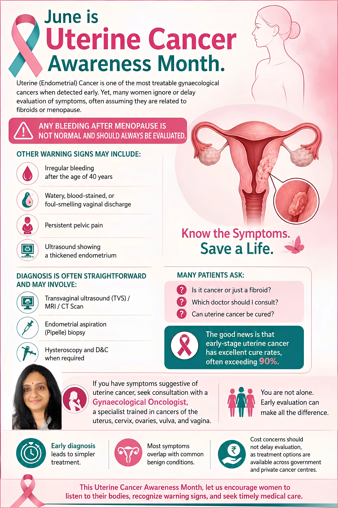

गर्भाशय कैंसर — जो अधिकतर एंडोमेट्रियल कैंसर होता है — जल्दी पहचान होने पर सबसे अधिक उपचार योग्य गायनोकोलॉजिकल कैंसरों में से एक है।[1] फिर भी कई महिलाएं एक ही सवालों से जूझती हैं: क्या यह कैंसर है या सिर्फ फाइब्रॉइड? मुझे किस डॉक्टर से मिलना चाहिए? क्या यह वास्तव में ठीक हो सकता है?
यह गाइड मरीजों द्वारा पूछे जाने वाले सबसे सामान्य प्रश्नों के उत्तर सरल, व्यावहारिक भाषा में देती है।
मेनोपॉज़ के बाद किसी भी प्रकार का रक्तस्राव सामान्य नहीं है और इसका हमेशा मूल्यांकन किया जाना चाहिए — चाहे वह हल्का स्पॉटिंग ही हो।
गर्भाशय कैंसर के लिए सही डॉक्टर कौन है?
गर्भाशय कैंसर के लिए सही विशेषज्ञ एक गायनोकोलॉजिकल ऑन्कोलॉजिस्ट होता है — जो विशेष रूप से गर्भाशय, सर्विक्स, अंडाशय, वल्वा और योनि के कैंसर में प्रशिक्षित होता है। मेनोपॉज़ के बाद रक्तस्राव (हल्के स्पॉटिंग सहित), संदेहजनक अल्ट्रासाउंड, CT या MRI निष्कर्ष, या बायोप्सी में असामान्य कोशिकाएं पाए जाने पर डॉक्टर से मिलें। उपचार आदर्श रूप से एक विशेषीकृत कैंसर संस्थान में किया जाना चाहिए, सरकारी या निजी।
गर्भाशय कैंसर के लिए सबसे उचित विशेषज्ञ एक गायनोकोलॉजिकल ऑन्कोलॉजिस्ट है — एक डॉक्टर जो महिला प्रजनन अंगों के कैंसर में विशेष रूप से प्रशिक्षित होता है, जिसमें गर्भाशय, सर्विक्स, अंडाशय, वल्वा और योनि शामिल हैं।
आपको डॉक्टर से कब सलाह लेनी चाहिए?
- मेनोपॉज़ के बाद रक्तस्राव, हल्के स्पॉटिंग सहित
- संदेहजनक अल्ट्रासाउंड, CT स्कैन, या MRI निष्कर्ष
- बायोप्सी में असामान्य कोशिकाएं पाई जाना
किस अस्पताल में गर्भाशय कैंसर का उपचार होता है?
पश्चिम बंगाल के सभी प्रमुख कैंसर केंद्रों में गर्भाशय कैंसर का उपचार होता है। उपचार आदर्श रूप से एक विशेषीकृत कैंसर संस्थान में किया जाना चाहिए, सरकारी या निजी। सबसे उचित विकल्प वित्तीय विचारों और विशेषीकृत या उन्नत सर्जरी की आवश्यकता पर निर्भर करता है।
निदान: आवश्यक हो सकने वाली जांचें
गर्भाशय कैंसर का निदान सामान्यतः ट्रांसवजाइनल अल्ट्रासाउंड से शुरू होता है, जो मोटी एंडोमेट्रियम का पता लगाता है लेकिन अकेले कैंसर की पुष्टि नहीं कर सकता। एक एंडोमेट्रियल एस्पिरेशन (पाइपल) बायोप्सी, जो सामान्यतः बाह्य रोगी प्रक्रिया के रूप में की जाती है, निदान की पुष्टि करती है। यदि परिणाम अनिर्णायक हो, तो एनेस्थीसिया के अंतर्गत हिस्टेरोस्कोपी और D&C किया जाता है, सामान्यतः एक ही दिन में।
1. ट्रांसवजाइनल अल्ट्रासाउंड (TVS)
यह प्रथम-स्तरीय जांच है। यह मोटी एंडोमेट्रियम का पता लगाती है लेकिन अकेले कैंसर की पुष्टि नहीं कर सकती — यह केवल संदेह उत्पन्न करती है जिसके लिए आगे का मूल्यांकन आवश्यक है।
2. एंडोमेट्रियल एस्पिरेशन बायोप्सी (पाइपल बायोप्सी)
यह जांच निदान की पुष्टि करती है और सामान्यतः एक साधारण बाह्य रोगी (OPD) प्रक्रिया के रूप में की जाती है।
3. डायग्नोस्टिक हिस्टेरोस्कोपी और D&C
यदि एस्पिरेशन बायोप्सी अनिर्णायक हो, तो एनेस्थीसिया के अंतर्गत हिस्टेरोस्कोपी और डाइलेशन एंड क्यूरेटेज (D&C) किया जाता है। यह एक छोटी प्रक्रिया है, सामान्यतः केवल हल्की असुविधा होती है, और सामान्यतः रात्रि अस्पताल में रुके बिना डेकेयर प्रक्रिया के रूप में की जा सकती है।
लक्षण: फाइब्रॉइड बनाम गर्भाशय कैंसर
गर्भाशय कैंसर सबसे अधिक मेनोपॉज़ के बाद रक्तस्राव का कारण बनता है — सबसे महत्वपूर्ण चेतावनी संकेत — इसके साथ 40 वर्ष की आयु के बाद अनियमित रक्तस्राव, असामान्य स्राव, या पेल्विक दर्द। फाइब्रॉइड सामान्यतः छोटी उम्र की महिलाओं में अधिक मासिक रक्तस्राव, पेट के निचले हिस्से में भरापन और दबाव के लक्षण पैदा करते हैं। मेनोपॉज़ के बाद किसी भी रक्तस्राव का मूल्यांकन किया जाना चाहिए।
यह महिलाओं में सबसे सामान्य चिंताओं में से एक है — और यह भ्रम समझ में आता है, क्योंकि कई लक्षण ओवरलैप करते हैं।
गर्भाशय कैंसर के सामान्य लक्षण
- मेनोपॉज़ के बाद रक्तस्राव — एकल सबसे महत्वपूर्ण चेतावनी संकेत
- 40 वर्ष की आयु के बाद अनियमित रक्तस्राव
- पतला या दुर्गंधयुक्त योनि स्राव
- पेल्विक दर्द (सामान्यतः बाद के चरण का लक्षण)
- पेट में गांठ
फाइब्रॉइड के सामान्य लक्षण
- अधिक मासिक रक्तस्राव
- पेट के निचले हिस्से में भरापन का अनुभव
- दबाव के लक्षण — बार-बार पेशाब या कब्ज
| विशेषता | फाइब्रॉइड | कैंसर |
|---|---|---|
| आयु समूह | कम उम्र की महिलाएं | सामान्यतः 45 वर्ष से अधिक |
| रक्तस्राव का प्रकार | अधिक मासिक धर्म | अनियमित या मेनोपॉज़ के बाद |
| प्रकृति | सौम्य (बिनाइन) | मैलिग्नेंट |
"अल्ट्रासाउंड में 'बल्की यूटेरस' दिखना स्वतः ही कैंसर का अर्थ नहीं है। यह एक वर्णनात्मक निष्कर्ष है, निदान नहीं — आगे का मूल्यांकन ही वास्तविक कारण निर्धारित करता है।"
मरीजों के सामान्य प्रश्न
आपको तत्काल डॉक्टर से कब मिलना चाहिए?
मेनोपॉज़ के बाद किसी भी रक्तस्राव के लिए, हल्के स्पॉटिंग सहित; मासिक धर्म पैटर्न में अचानक बदलाव के लिए; लगातार असामान्य स्राव के लिए; या अल्ट्रासाउंड में मोटी एंडोमेट्रियम दिखने पर तत्काल डॉक्टर से मिलें। इनमें से कोई भी लक्षण अपने आप कैंसर की पुष्टि नहीं करता, लेकिन प्रत्येक के लिए प्रतीक्षा करने के बजाय त्वरित मूल्यांकन आवश्यक है।
इन्हें नज़रअंदाज़ न करें:
- मेनोपॉज़ के बाद कोई भी रक्तस्राव, चाहे वह केवल स्पॉटिंग ही हो
- मासिक धर्म पैटर्न में अचानक बदलाव
- लगातार असामान्य स्राव
- अल्ट्रासाउंड में मोटी एंडोमेट्रियम दिखना
मुख्य संदेश
- गर्भाशय कैंसर की पहचान जल्दी हो सकती है और यह अत्यधिक उपचार योग्य है
- अधिकांश लक्षण फाइब्रॉइड जैसी सामान्य, सौम्य स्थितियों से मेल खाते हैं
- सही विशेषज्ञ से समय पर सलाह लेना अत्यंत महत्वपूर्ण है
- खर्च उपचार में देरी का कारण नहीं बनना चाहिए — कैंसर केंद्रों में सरकारी योजनाएं उपलब्ध हैं
यदि आप या आपके परिवार में किसी को गर्भाशय संबंधी समस्याओं के लक्षण या रिपोर्ट हैं, तो मूल्यांकन में देरी न करें। जल्दी निदान उपचार को सरल, सुरक्षित और कहीं अधिक प्रभावी बना सकता है।
संदर्भ
- GLOBOCAN 2022. Global Cancer Observatory: Cancer Today. International Agency for Research on Cancer, World Health Organization. gco.iarc.fr
- Shan W, Ning C, Luo X et al. Insulin resistance is a significant risk factor of endometrial cancer in premenopausal women with polycystic ovary syndrome. Gynecologic Oncology. 2014;134(1):97–100.

क्या आपमें मूल्यांकन की आवश्यकता वाले लक्षण हैं?
डॉ. दीपान्विता बैनर्जी CNCI कोलकाता में गर्भाशय, सर्विक्स और अंडाशय कैंसर के मूल्यांकन और उपचार के लिए सलाह प्रदान करती हैं।